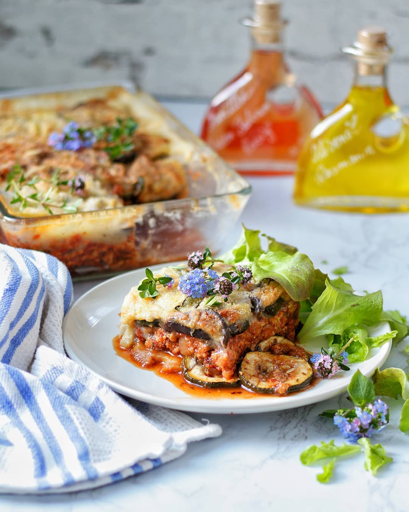

Musaka podľa @living_cooking_gardening — Normy Jedál
(polski ponizej)Meine Lieben, mit dieser unglaublich leckeren Moussaka von der lieben Charis @oregano_and_lemon, möchte ich Euch nach Griechenland entführen und vielleicht trotz der Kälte, Euch in leichte Urlaubsstimmung verzaubern. Was soll‘s, wenigstens das!! Ich habe anstatt Kartoffeln 2 Pastinaken genommen, und vegetarisches Hackfleisch verwendet. Mega!!
Kochani, tą pyszną musaką od wspanialej Charis @oregano_and_lemon, chciałbym Was zabrać do Grecji i byc moze, mimo tego zimniska uda mi sie Was oczarować lekkim wakacyjnym nastrojem. Przynajmniej to !! A musaka jest mega !!
Oto jak ja się robi:
400 g bakłażanów pokrój w 0,5 cm plastry, rozłoż na ręczniku kuchennmy, posyp solą. Pokrój 300 g cukinii i 1 lub 2 duże pasternaki na 0,5 cm plasterki, odstaw.Posiekaj 1 cebulę Na patelni rozgrzej 40 ml oliwy, podsmaż bakłażany, cukinię i pasternak na złoty kolor. Ułóż warzywa na papierze kuchennym. Na tej samej patelnię i podsmaż cebulę w 40 g oleju, aż się zeszkli. Dodaj 400 g mięsa mielonego i podsmaż.(Ja mialam wegetarianskie) Dodaj 1 puszkę posiek. pomidorów, 2 łyżki konc. pomidorowego, 1 łyżkę cukru, 2 łyżki tymianku, sól i pieprz do smaku i gotuj na wolnym ogniu przez ok. 15 min.
Beszamel: w rondelku rozpuść 70 g masła, podsmaż w nim 70 g mąki. Dodaj 700 ml mleka, ciągle mieszając, uważaj aby nie było grudek.Dodaj 2 żółtka, 1 łyżeczkę gałki muszkatołowej, 70 g parmezanu i trochę pieprzu i mieszaj, aż sos stanie się gęsty. Posmaruj formke masłem i ukladaj składniki w następującej kolejności:Pasternak, bakłażan, cukinia, mięso, cukinia, bakłażan, beszamel.Na koniec posyp beszamel odrobina bułki tartej.Rozgrzej piekarnik do 200 stopni góra/dól i piecz w nim musakę przez 30 minut.
#moussaka #griechischeküche #mediterraneküche #griechischkochen #worldfood #lunch #dinner
#worldrecipes #aubergine #béchamel, #zapiekanka #obiad #kolacja #conaobiad #musaka
#zapiekankawegetariańska#abendessen #mittagessen #healthyfood
#gesunderezepte #gesundessen #vegetarisch #fotografiakulinarna #foodphotography #foodstylist
#foodstagram #foodphoto #foodphotography #foodfluffer#podróżodkuchni